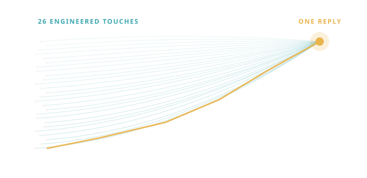

Set it up · New to HubSpot30 days
HubSpot Implementation
We architect HubSpot around your sales process, not a template, and train your team as we build, from a focused first build to a full revenue stack.

HubSpot Platinum Partner
We engineer the conditions for growth, so the right buyer meets the right message at the right moment.
Wherever you're starting from, we make the move smooth, make it stick, and turn HubSpot into the system your team actually runs the business on. Clear plan, live in 30 days.
As featured in
Trusted by B2B teams
You didn't start this to babysit a CRM. Maybe you've never had a real one, maybe you're leaving one behind, maybe the last setup never stuck. Either way, you can't see what's working, good leads slip through the cracks, and every forecast is a guess.
One system your team actually uses, so you can finally see the business and grow it on purpose. We design HubSpot around how your people already work, set it up to last, and stay until it sticks.
Adoption is not the finish line, it's the gate. The only CRM that gives you clear numbers and a pipeline you can grow is the one your team actually uses. So we measure it.
Start fresh, switch platforms, or fix what's broken. However you get to HubSpot, the move runs the same way: fixed scope, a named owner, live in 30 days. Then we grow on it.

We architect HubSpot around your sales process, not a template, and train your team as we build, from a focused first build to a full revenue stack.
Move off Salesforce, Pipedrive, Dynamics, or a tangle of spreadsheets without losing your history, your reports, or your sanity. Rehearsed, then executed.
You have HubSpot and it's a mess. We untangle what the last agency left and win your team back.
A fractional operations partner who keeps the system honest as you grow: integrations, data migrations, CRM architecture, custom API work, complex automations, and the reporting leadership runs on.

We're builders first. We take a portal from zero to fully configured, integrate anything with an API, and run six-figure implementations without outside consultants. Then we grow on it.
Inbound and demand gen come after the system is solid, never before. That's the whole point.
Once the foundation is solid, we fill the funnel and drive revenue: demand gen, audience targeting, message and list building, creative, direct outreach, branding, web, video, and paid search and social.
The name comes from a real moment. Luke was deep into a cold outreach campaign, and on the 26th email to one executive, she replied: "Where have you been all my life? This is exactly what we needed. This is serendipity." What felt like perfect timing to her was 26 engineered touches on our side.
That's the whole idea. We reverse-engineer the conditions for growth, so the right buyer meets the right message at the right moment, and it feels like luck. It isn't. It's a system. That system is what createserendipity.com is named for.

The segment growing fastest, and the one we're built for.
AI-driven growth, the engineered edge behind how we work.
The demand-gen half most HubSpot shops can't run. We do.
The move isn't done when the system goes live. It's done when your team is running on it. So your plan treats day 31 to 90 as the real work, with three clear steps and no surprises.
Implementation success is about 40% planning, 40% adoption, and only 20% technology. So that is how we spend the time.
We map how your deals actually move, before touching a setting. You get a written build plan: pipeline stages, data decisions, and the scoreboard leadership will run on.
Pipelines, automation, data, and reporting, built and reviewed with you weekly. You get a working portal that mirrors how you sell, not a template.
Role-based training, office hours, and fixes within a day. You get a team that knows what to do Monday morning.
We track real usage, cut the dead weight, and sharpen what works. You get adoption numbers, not anecdotes.
Go-live is the starting line, not the finish.
Same team, same market. The only thing that changes is whether the system works.
A clearer business, and more revenue from the pipeline you already have.
Case study · Perricone
“Every agency promised us a system. Serendipity was the first that stayed until our team used it.”
This is what it feels like to run the business, instead of chasing it.
Not ready for a call? This is a diagnostic across the seven areas where implementations succeed or fail. You get a score and the one thing to fix first.
Your setup is ahead of your usage.
Fix first: team adoptionThe things B2B teams ask us before the first call.
Thirty days to a working system, guaranteed. If we miss it for reasons on our side, we keep working at no cost until you're live. Full adoption follows through day 90.
Scope drives price, so we quote after a 30-minute call, not before. What's fixed is the timeline: 30 days to live, with the guarantee behind it. That time-certainty is the risk-reducer most agencies can't offer.
A named decision-maker, data access in the first week, and your team's time for training. You get a one-page checklist before kickoff. Hold up your side and the date holds, which is exactly what makes the guarantee possible.
The person you meet on the first call stays with you through go-live and the first 90 days. You will always know who is in your portal.
Most agencies hand off after setup. We measure adoption and stay until your team is using the system. Portal Rescue exists specifically for teams the last agency left behind.
Yes. Whether you're on Salesforce, Pipedrive, or spreadsheets, we audit everything first, rehearse the migration in a sandbox, then run it side-by-side so nothing drops. Your history and reports come with you.
Then we found the real project. Data triage is built into the first phase. We move what is worth moving and leave the rest behind.
Yes, and your HubSpot onboarding fee is typically waived when a partner delivers. HubSpot advises, we build.
Most clients move to a RevOps rhythm: quarterly goals, monthly reviews. Some run it themselves. Both are wins.
Both, in sequence. We get the system solid first, then grow on it with inbound and demand gen: ABM, account targeting, content, and lead routing. Growth works better on a foundation that holds.
Thirty minutes, no pitch deck. You talk, we listen, and you leave with a point of view either way.
Live in 30 days, or we keep working at no cost